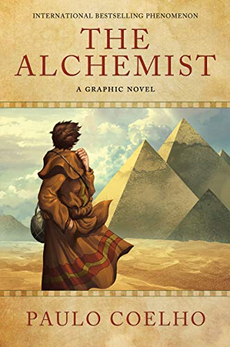

 Combining magic, mysticism, wisdom, and wonder into an inspiring tale of self-discovery, Paulo Coelho's masterpiece tells the mystical story of Santiago, an Andalusian shepherd boy who yearns to travel in search of a worldly treasure. His quest will lead him to riches far different—and far more satisfying—than he ever imagined. Santiago's journey teaches us about the essential wisdom of listening to our hearts, recognizing opportunity and learning to read the omens strewn along life's path, and, most importantly, following our dreams.